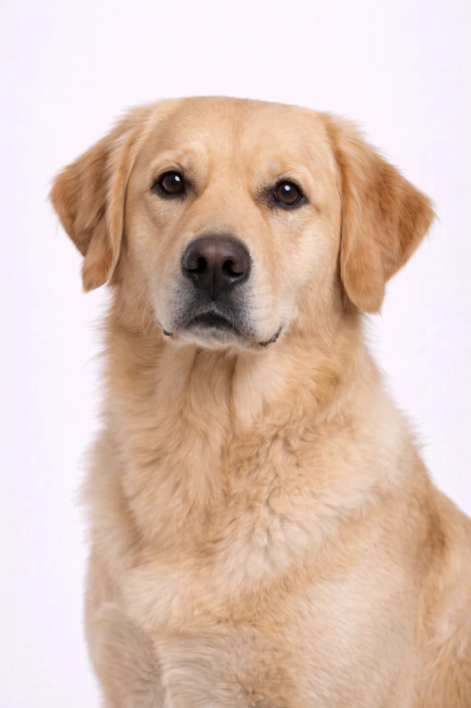

Golden Retriever
Un intelligenteee, amichevole compagno perfetto per famiglie con bambini.
20-24 in
55-75 lbs
Valutazioni della Razza
Temperamento
Panoramica
Il Golden Retriever è una delle razze di cani più popolari. Il loro atteggiamento amichevole e tollerante li rende favolosi animali da compagnia, e la loro intelligenza li rende cani da lavoro altamente capaci.
Temperamento
I Golden sono espansivi, affidabili e desiderosi di compiacere. Sono meravigliosi con i bambini e altri animali domestici. La loro natura paziente e gentile li rende eccellenti cani da terapia.
Salute
Generalmente sano con un'aspettativa di vita di 10-12 anni. Le preoccupazioni comuni includono displasia dell'anca e torsione gastrica. I controlli veterinari regolari e le cure preventive sono importanti. Mantenere un peso sano aiuta a prevenire molti problemi di salute.
Esercizio
Razza ad alta energia che richiede esercizio quotidiano vigoroso—almeno un'ora di attività. Prosperano con famiglie attive che amano le attività all'aperto. La stimolazione mentale attraverso l'addestramento e i giochi di intelligenza è altrettanto importante. Senza un adeguato esercizio, possono sviluppare problemi comportamentali.
Questa Razza è Adatta a Te?
Ideale Per
- Famiglie con bambini
- Proprietari alle prime armi
- Famiglie attive
- Chi desidera un cane da terapia/servizio
- Case con giardino
Non Ideale Per
- Chi desidera un cane da guardia
- Chi soffre di allergie
- Chi non sopporta il pelo di cane
- Spazi abitativi molto piccoli
Il Nostro Verdetto: Il Golden Retriever è il cane di famiglia per eccellenza—amichevole, paziente e desideroso di compiacere. Perfetto per proprietari alle prime armi e famiglie. Hanno bisogno di esercizio regolare e toelettatura ma ti ricompensano con lealtà e amore incrollabili.